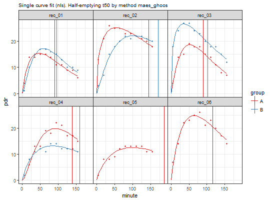

Plots 13C data and fits.
# S3 method for breathtestfit plot(x, inc = 5, method_t50 = "maes_ghoos", ...)
| x | object of class |
|---|---|
| inc | Increment for fitted curve plot in minutes |
| method_t50 | Method for t50: " |
| ... | other parameters passed to methods. Not used |
A description of plotting
data = list( A = simulate_breathtest_data(n_records = 6, seed = 100)$data, B = simulate_breathtest_data(n_records = 4, seed = 187)$data ) # cleanup_data combines the list into a data frame x = nls_fit(cleanup_data(data)) plot(x)